集群性能调试

概述
本教程介绍如何在（Ascend/GPU） AI处理器上使用MindSpore Profiler进行集群训练性能调试，集群训练数据收集的支持情况如下表：
性能数据 |
支持设备 |
|---|---|
集群迭代轨迹 |
Ascend、GPU |
集群通信与计算重叠时间分析 |
Ascend、GPU |
集群通信性能分析 |
Ascend |
资源利用 |
Ascend |
策略感知 |
Ascend |
执行总览 |
Ascend |
操作流程
搭建分布式训练环境，准备分布式训练脚本，并在训练脚本中调用性能调试接口，接着运行训练脚本。
收集集群训练性能数据。
启动MindInsight，并通过启动参数指定summary-base-dir目录(summary-base-dir是Profiler所创建目录的父目录)，例如训练时Profiler创建的文件夹绝对路径为
/home/user/code/data，则summary-base-dir设为/home/user/code。启动成功后，根据IP和端口访问可视化界面，默认访问地址为http://127.0.0.1:8080。在训练列表找到对应集群训练，点击性能分析，即可在页面中查看集群性能数据。
本文图片均来源Ascend AI处理器，不同设备展示有差异之处会另外进行说明。
分布式训练
Ascend分布式训练请参考分布式训练教程。
GPU分布式训练请参考分布式训练教程。
收集集群性能数据
多机多卡训练的时候，一次集群训练后，性能数据分布在各个主机上（host节点）。要进行集群性能分析，需要将所有主机上的性能数据收集到一台主机上进行分析。考虑到集群运行环境的复杂以及相关的权限问题、登录问题，比较合理的方式是让用户去收集集群性能数据。 下面是一次分布式集群训练后，使用脚本收集性能数据的过程，用户可以参照此脚本进行集群性能数据收集。
脚本程序说明：脚本程序首先创建了集群作业文件夹，然后利用SSHPass技术进行非交互式的远程拷贝（避免了手动认证，手动输入密码），将集群中各个host节点的数据拷贝到集群作业文件夹中。
#!/bin/bash
echo "=============================================================================================================="
echo "Please run the script as: "
echo "bash collect_cluster_profiler_data.sh"
echo "for example: bash collect_cluster_profiler_data.sh cluster_hccl_config_path cluster_account_config_path cluster_train_id host_train_id is_absolute_path"
echo "=============================================================================================================="
SSH="ssh -o StrictHostKeyChecking=no"
SCP="scp -o StrictHostKeyChecking=no"
# Get the node list in the cluster.
get_cluster_list()
{
local cluster_config=$1
cat ${cluster_config} | python3 -c 'import sys,json;[print(node) for node in json.load(sys.stdin)["cluster"].keys()]'
}
# Get the account number of node.
get_node_user()
{
local cluster_config=$1
local node=$2
cat ${cluster_config} | python3 -c 'import sys,json;print(json.load(sys.stdin)["cluster"]['\"${node}\"']["user"])'
}
# Get the password of node.
get_node_passwd()
{
local cluster_config=$1
local node=$2
cat ${cluster_config} | python3 -c 'import sys,json;print(json.load(sys.stdin)["cluster"]['\"${node}\"']["passwd"])'
}
# Copy data from remote node to local node.
rscp_pass()
{
local node="$1"
local user="$2"
local passwd="$3"
local src="$4"
local target="$5"
sshpass -p "${passwd}" ${SCP} -r "${user}"@"${node}":"${src}" "${target}"
}
cluster_hccl_config_path=$1
cluster_account_config_path=$2
cluster_train_id=$3
host_train_id=$4
is_absolute_path=$5
node_list=$(get_cluster_list ${cluster_account_config_path})
echo "-----begin----"
target_dir=${cluster_train_id}/profiler/
if [ ! -d "${target_dir}" ]; then
mkdir -p ${target_dir}
fi
for node in ${node_list}
do
user=$(get_node_user ${cluster_account_config_path} ${node})
passwd=$(get_node_passwd ${cluster_account_config_path} ${node})
echo "------------------${user}@${node}---------------------"
# Eight devices data
if [ $is_absolute_path = '0' ];then
device_regex=$(basename $(dirname $host_train_id))
output=$(basename $host_train_id)
grandfather_host_train_id=$(dirname $(dirname $host_train_id))
for((i=0;i<8;i++));
do
src_dir=${grandfather_host_train_id}/${device_regex}${i}/${output}*/profiler/*.*
$(rscp_pass ${node} ${user} ${passwd} "${src_dir}" ${target_dir})
done
elif [ $is_absolute_path = '1' ];then
src_dir=${host_train_id}/profiler/*.*
for((i=0;i<8;i++));
do
$(rscp_pass ${node} ${user} ${passwd} "${src_dir}" ${target_dir})
done
else
echo "The value of is_absolute_path can only be 0 or 1."
exit 1
fi
done
脚本参数说明：
cluster_hccl_config_path为多卡环境的组网信息文件路径。内容格式如下：{ "version": "1.0", "server_count": "1", "server_list": [ { "server_id": "10.xxx.xxx.1", "device": [ {"device_id": "0","device_ip": "192.1.27.6","rank_id": "0"}, {"device_id": "1","device_ip": "192.2.27.6","rank_id": "1"}, {"device_id": "2","device_ip": "192.3.27.6","rank_id": "2"}, {"device_id": "3","device_ip": "192.4.27.6","rank_id": "3"}, {"device_id": "4","device_ip": "192.1.27.7","rank_id": "4"}, {"device_id": "5","device_ip": "192.2.27.7","rank_id": "5"}, {"device_id": "6","device_ip": "192.3.27.7","rank_id": "6"}, {"device_id": "7","device_ip": "192.4.27.7","rank_id": "7"}], "host_nic_ip": "reserve" } ], "status": "completed" }
cluster_account_config_path为各主机账号密码配置文件路径，内容格式如下：{ "rank_size": 16, "cluster": { "10.xxx.xxx.1": { "user": "root", "passwd": "xxx" }, "10.xxx.xxx.2": { "user": "root", "passwd": "xxx" } } }
cluster_train_id集群性能数据汇总保存的路径，比如/home/summary/run1、/home/summary/run2其中run1和run2分别保存两次集群训练的所有性能数据。host_train_id集群训练中，用户设置的性能数据保存路径。当性能数据保存路径设置为绝对路径时，host_train_id的值即为用户设置的值。比如值为/data/run时，多卡性能数据均保存在/data/run/profiler中（profliler文件夹由程序自动创建），host_train_id值应该设置为/data/run。当性能数据保存路径设置为相对路径时，多卡性能数据可能保存在不同的文件夹中。比如/data/run/device0/data/profiler、/data/run/device1/data/profiler。它们的共性路径为/data/run/device/data/profiler，每张卡的性能数据保存路径为/data/run/device{device_id}/data/profiler。host_train_id值应该设置为/data/run/device/data。is_absolute_path在需要收集的集群性能数据中，单机多卡数据是否保存在同一个目录中。若是，设置为1；不是，设置为0。
通过脚本收集到的集群性能目录结构为：
|-- run
|-- profiler
|-- step_trace_raw_{rank_id}_detail_time.csv
集群性能目录和单卡性能目录格式进行了统一。
在MindInsight r1.3以及之前的版本中，集群性能目录结构如下：
|-- run
|-- hccl.json
|-- host_ips_mapping.txt
|-- cluster_profiler
|-- 1
| |-- profiler
| |-- step_trace_raw_0_detail_time.csv
通过数据转换脚本，可以将用户使用MindInsight r1.3以及之前的版本创建的集群性能目录转换为当前支持的集群性能目录。可以从官网下载集群目录转换脚本。
以上为Ascend AI处理器关于收集集群性能数据的介绍，GPU集群训练请参考GPU分布式训练教程。
启动MindInsight
启动命令请参考MindInsight相关命令。
训练性能
用户从训练列表中选择指定的训练，点击性能调试，点击集群Table标签，可以以集群视角展示本次训练性能数据。集群训练性能包括集群迭代轨迹分析、集群通信性能分析。
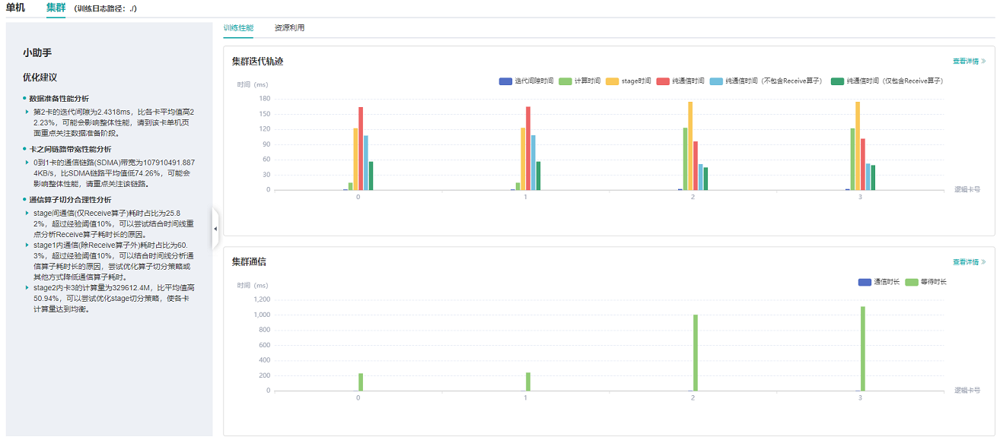
图1：集群训练性能总览
图1为集群训练性能总揽，是对集群迭代轨迹组件、集群通信性能组件的总体呈现。各组件展示内容如下：
集群迭代轨迹：展示集群中所有卡的迭代轨迹信息；总览页面展示了集群迭代轨迹性能。
集群通信性能: 展示集群中所有卡的通信性能以及全网链路性能；总览页面展示了集群通信性能。
集群性能优化小助手：左侧小助手提供集群训练时可能存在的性能瓶颈点，用户可以根据提示进行训练性能优化。
GPU上目前仅支持集群迭代轨迹的展示，用户可查看集群迭代轨迹性能，左侧小助手提供一篇关于集群性能调优的文档，用户可点击进一步了解。
集群迭代轨迹分析
使用集群迭代轨迹分析组件，可以找出集群训练中的慢主机、慢卡。 集群迭代轨迹分析组件展示所有卡的迭代信息，包括迭代间隙、前反向、迭代拖尾，均支持排序操作。其中迭代间隙反映了数据处理阶段的快慢，通过卡的迭代间隙时间可以反映出对应主机处理数据的快慢。卡的前反向时间反映了卡的计算能力。迭代拖尾反映了all_reduce耗时以及并行情况。
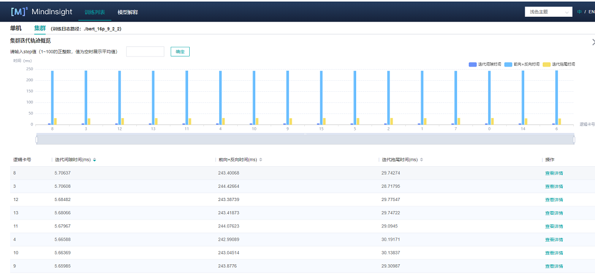
图2：集群迭代轨迹
图2展示了集群迭代轨迹分析页面，默认展示卡的性能平均值，支持查询特定step下的卡的迭代轨迹信息。通过点击单卡中的详情连接，也可以跳转到单卡的详细性能展示页面，查询详细的单卡性能数据。
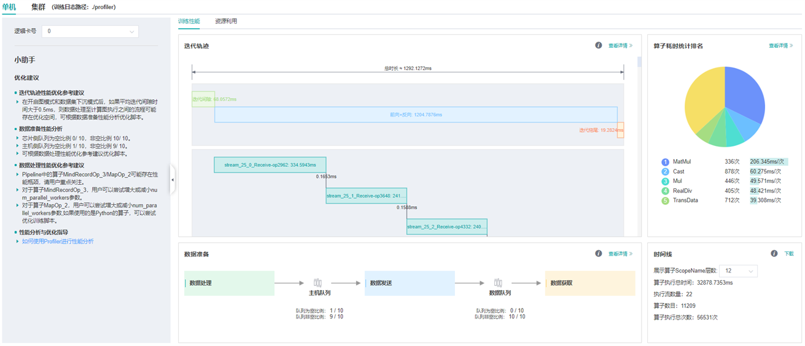
图3：单卡性能信息
图3展示集群中单卡性能信息，单卡性能信息请参考单卡性能信息。
集群通信与计算重叠时间分析
集群通信与计算重叠时间分析组件用于流水并行和模型并行场景，可以找出集群训练中的慢主机、慢卡。
集群通信与计算重叠时间分析组件新增了五项指标：纯通信时间（仅包含Receive算子）、state时间、纯通信时间、计算时间、纯通信时间（不包含Receive算子）。
纯通信时间（仅包含Receive算子）：只有点对点（Receive）通信算子执行、计算算子不执行的时间段。该时间反应的是Pipeline并行各stage间的不同步情况。
stage时间：各个stage的耗时时长，该值为step时长减去该step内receive通信算子的时长。通过该指标可以查看哪个stage的耗时最长。
纯通信时间：只有通信算子执行、计算算子不执行的时间段。如果该部分耗时较长，说明通信耗时对性能影响较大。
计算时间：AI Core算子执行的时间总和，用于判断是否有慢的卡。时间越长，说明对应的卡执行速度越慢。
纯通信时间（不包含Receive算子）：只有除Receive通信算子外的其它通信算子执行、计算算子不执行的时间段。该时间段占的比例越大，需要考虑是否可以调整该stage内算子的切分策略，降低该时间段的耗时时长。
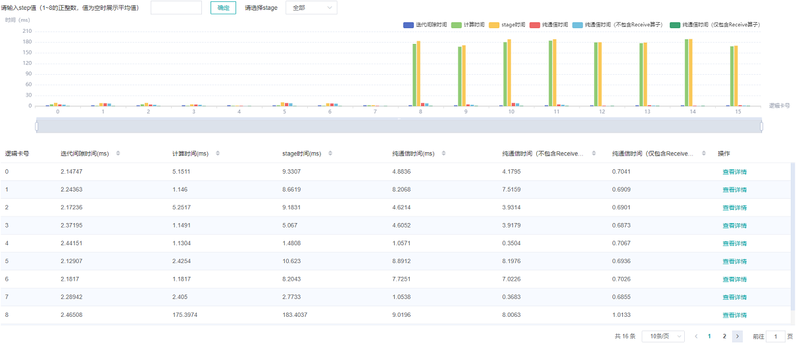
图4：流水并行模式分析
图4展示了流水并行场景下页面展示的内容，默认展示所有step的平均数值。页面中展示了迭代间隙时间、纯接收时间、阶段时间、纯通信时间、计算时间、纯集合通信时间。由于整个网络的计算图被切分为多个阶段的子图，阶段时间可用于定位慢的阶段，通过选择阶段编号可以筛选出同一阶段的卡，在阶段内部可用模型并行场景的思路定位瓶颈。
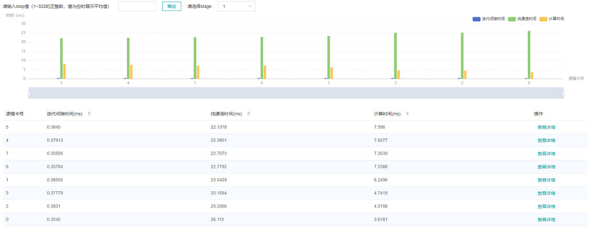
图5：模型并行模式分析
图5展示了模型并行场景（此处指层内模型并行）下页面展示的内容，默认展示所有step的平均数值。页面中展示了迭代间隙时间、纯通信时间、计算时间。计算时间可用于定位慢卡，如果没有慢卡，查看通信时间与计算时间占比，若通信时间占比较大，考虑是否有慢链路。
集群通信性能分析
集群通信性能组件从两个维度来展示集群通信性能信息，以卡为粒度展示和全网链路展示。
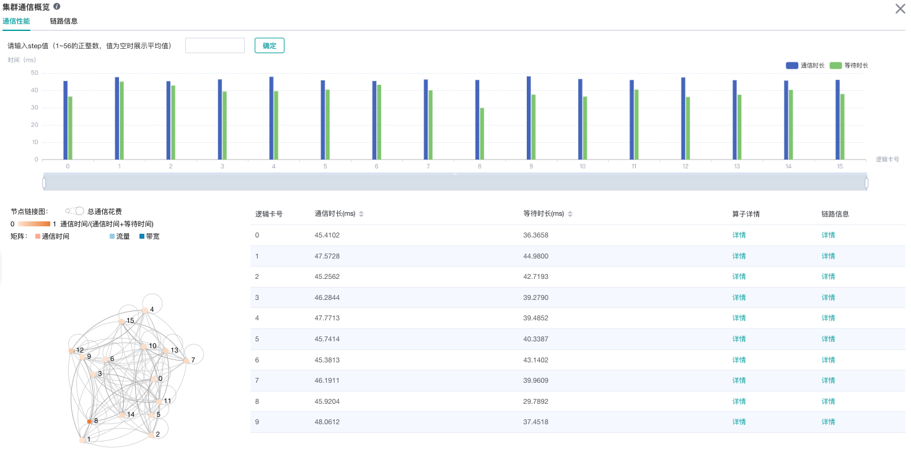
图6：集群通信性能分析
图6展示了集群通信性能分析页面，包含逻辑卡通信性能以及全网链路信息（所有逻辑卡链路信息）。
逻辑卡通信性能TAB页主要用来展示逻辑卡的通信性能，包括通信时间、等待时间、算子详情、逻辑卡链路信息。
通信时间：表示通信算子的通信耗时。如果通信耗时过长，有可能是某条链路有问题，可以通过链路带宽定位到具体的链路。通信时间计算方式为统计SDMA链路（server内通信）和RDMA链路（server间通信）的通信算子总耗时。如果是SDMA链路，取
Reduce inline和Memcpy算子总时间作为通信时间；如果是RDMA链路，取连续三个算子RDMASendPayload、RDMASendNotify、Notify Wait的总时间为通信时间。等待时间：也可称为同步时间。卡间进行通信前，首先会进行同步，确保通信的两张卡同步完成，再进行通信。等待时间计算方式为统计所有
Notify Wait算子总耗时并减去RDMA链路通信时间中的Notify Wait算子耗时。算子详情：以算子粒度展示通信性能，包括该通信算子的通信时长、等待时长、链路信息。
逻辑卡链路信息：显示源卡为该卡或者目的卡为该卡的链路信息。链路信息包括通信时间、通信量、带宽（通信量除以通信时间）、链路类型。其中链路类型包含SDMA链路（server内通信链路）和RDMA链路（server间通信链路）。点击详情后，通过弹窗的方式展示。
节点链接图展示了设备及通信链路的情况。图中每个节点代表一个设备，节点的大小编码该设备总通信时长。节点的颜色编码了该设备通信时间占通信与等待总时间的比例，即：通信时间/（通信时间+等待时间），颜色越深，表示该设备等待时间越短。等待时间短的设备可能是慢节点。节点可拖拽移动，节点间的边表示通信链路。
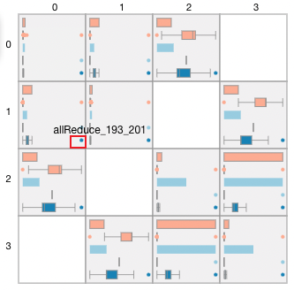
图7：算子性能信息
图7展示了在节点链接图中刷选部分设备后，呈现的邻接矩阵。邻接矩阵展示了各设备之间通信链路的情况。在每个格子中，第一行、第三行展示的是链路的通信时间、流量的统计值。邻接矩阵第二行、第四行、第五行的盒须图，反映了链路中通信时间、流量、带宽指标上所有通信算子的分布情况。图中红色框框出的离群点，表示该算子占据了该链路的绝大部分带宽。用户可通过邻接矩阵定位异常通信链路及异常通信算子。
鼠标右键点击邻接矩阵任意位置可回到节点链接图。

图8：算子性能信息

图9:逻辑卡链路信息
全网链路信息TAB页面展示所有逻辑卡的链路信息，提供源卡、目的卡、链路类型的选择。
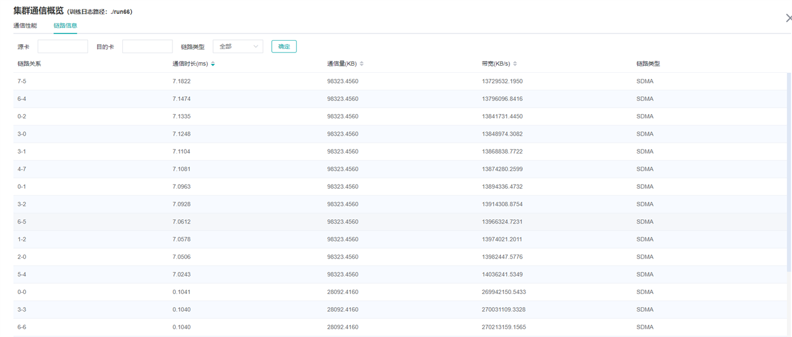
图10：全网链路信息
默认不收集通信性能数据，需要通过mindspore.Profiler中的profile_communication参数像Profiler(profile_communication=True)一样打开通信性能数据开关。只有多卡训练才能产生通信算子性能数据，在单卡训练场景中设置该参数是无效的。
使用MindInsight可视化通信性能数据需要安装Ascend 910 AI处理器配套软件包提供的通信性能数据解析whl包，whl包随配套软件包发布，参考如下命令完成安装。
pip install /usr/local/Ascend/latest/tools/hccl_parser-{version}-py3-none-any.whl
规格
出于对数据解析性能的考虑，当前对开启集群通信生成的文件数量进行了限制，目前MindSpore侧生成的原始通信性能文件（.trace后缀命名）数量上限为500。当通信原始数据超出上限，可能出现集群通信step数与集群迭代轨迹step数不一致的情况。
资源利用
集群内存使用情况分析
该页面展示了并行场景下，模型在Device侧的内存使用情况，是基于理论值的理想预估。页面内容包括：
集群设备的分布情况，使用了哪些服务器的哪些设备。
集群设备的内存峰值情况，即内存峰值与可用内存占比。
点击某个设备，可以跳转至该设备的内存详情页面。
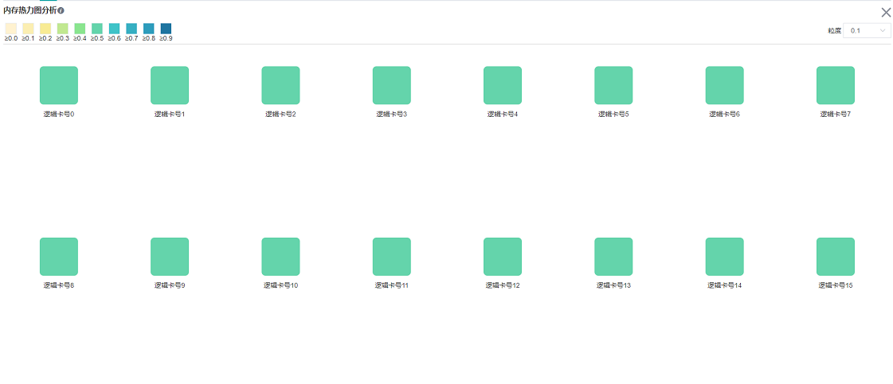
图11：集群内存概览页面
内存使用情况分析暂不支持异构训练场景。
集群FLOPs热力图分析
该页面展示了并行场景下，每个设备的FLOPs（浮点运算次）数据，热力图反映了设备之间FLOPs的相对大小。页面内容包括：
集群设备的分布情况，使用了哪些服务器的哪些设备。
集群设备之间FLOPs的相对大小，每个设备对应矩形块颜色代表当前设备FLOPs与所有设备中最大FLOPs的比值。
点击某个设备，可以跳转至该设备的算子耗时详情页面，含有FLOPs的详细数据。
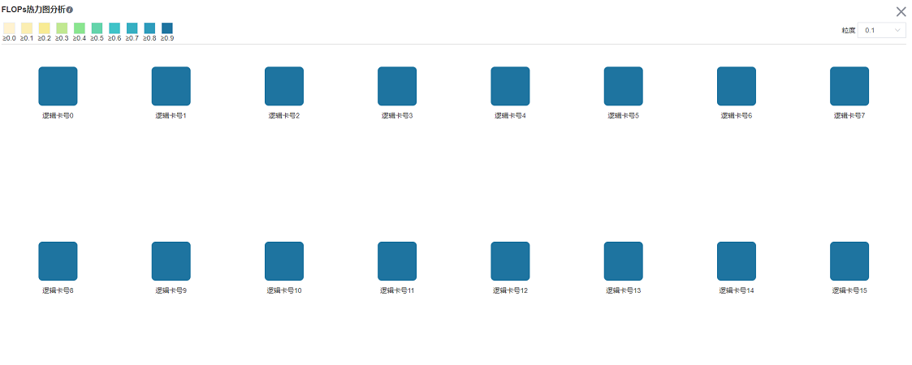
图12：集群FLOPs概览页面
策略感知
策略感知包括计算图探索、并行策略分析等功能模块。
计算图探索
总体介绍
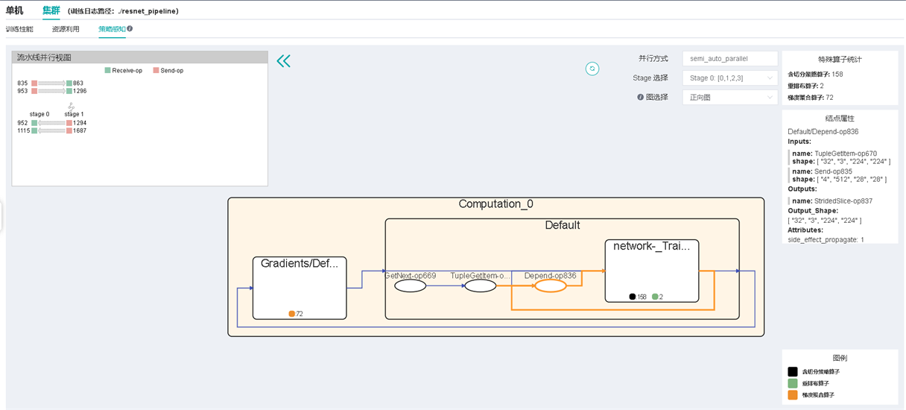
图13：策略感知视图页面
页面右上角会显示本次训练的并行方式，上图展示出本次训练采用的并行方式是自动并行。
用户可根据stage选择计算图进行探索，使用图选择器可选择计算图的特定模块（正向图、反向图、重计算图）进行通信结点的抽取。
页面左上角为流水线并行视图，当训练为流水线并行训练时，该视图展示stage之间数据发送和接收关系。点击其中的算子可以跳转到图中。
在页面中间展示计算图，方形的结点为聚合结点，可以对其进行双击打开或者关闭该节点，椭圆形为普通算子。
聚合结点未展开时，会显示该聚合结点内各类特殊算子的数量，主要展示三类算子：含切分策略算子、重排布算子、梯度聚合算子。重排布算子是两个算子之间如果上一个算子的输出无法与下一个算子进行运算，则会自动插入一个重排布算子实现排布变换，更多细节可以参考设计文档中的分布式训练设计章节。
鼠标单击选中某个结点（算子或聚合结点）后，右侧结点属性面板能够展示对应结点的输入输出、切分策略等信息，面板中的输入输出算子点击可跟踪。
算子策略矩阵
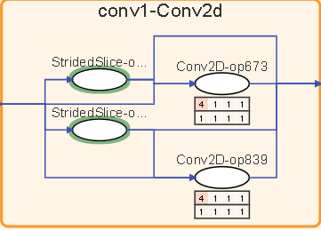
图14：算子策略矩阵
算子的某项输入存在切分策略时，会在该算子下方呈现一个策略矩阵，一行表示一项输入，小格子中的数字表示算子在对应维度上的切分份数。
鼠标悬浮在策略矩阵上，能够高亮对应的边。结合计算图中结点的输入输出定位功能，用户能够分析算子切分策略设计的合理性，调整切分策略。
需要注意的是，在计算图中没有绘制常量，因此针对常量的切分策略不会体现在图中。
流水线并行视图
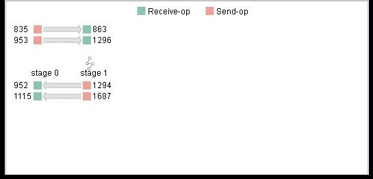
图15：流水线并行视图
采用了流水线并行策略时，点击页面左上角的按钮，即可展开流水线并行视图。该视图展示了流水线并行中，每个stage的Send（红色矩形）和Receive算子（绿色矩形）及不同stage之间Send、Receive算子的对应关系。视图中的算子支持点击操作，在计算图中定位。
用户可以结合流水线并行视图，评估stage切分的合理性，直观地分析出流水线并行策略的设计细节，micro-batch数量等信息。
算子堆叠与边隐藏

图16：算子堆叠
在计算图中，在聚合结点中如果同类型的算子数量过多，则会对其进行堆叠展示，双击可以展开查看算子。
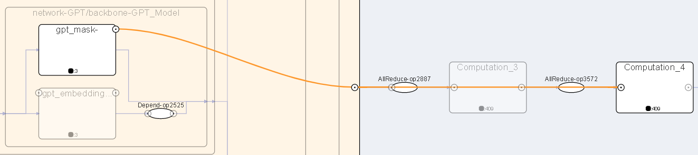
图17：查看被隐藏边
为了避免线过于零乱，部分不重要的边会被隐藏，鼠标悬浮在聚合结点周围的圆圈上面，可以看到被隐藏的边。
执行总览
用户从训练列表中选择指定的训练，点击性能调试，点击集群标签，可以以集群视角展示本次训练性能数据。
执行总览包括计算图执行序分析、各设备算子执行时间线分析、各step各设备时间信息概览。
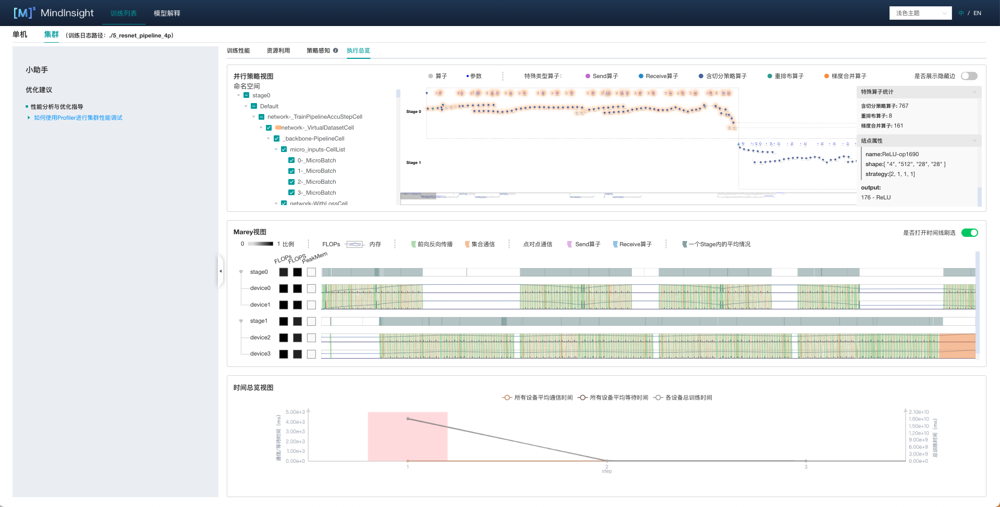
图18：集群执行总览
计算图执行序分析
执行总览页面上方即为并行策略视图。
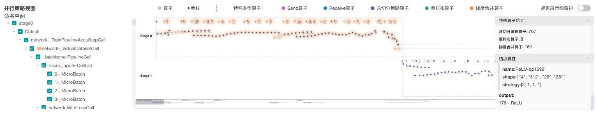
图19：并行策略视图
在此计算图中，算子依据执行序，从左向右布局。画布支持拖动，放缩观察。各类算子用不同颜色区分，视图最上方显示图例。
左侧为命名空间选择器，勾选命名空间后，计算图中对应算子会产生颜色光晕标识。
当并行训练采用流水线并行模式，该视图上会呈现所有stage的计算图，各stage计算图之间通过Send、Receive算子对应，进行横向排布。用户能够在计算图缩略图获得对流水线并行执行流程的整体感知。
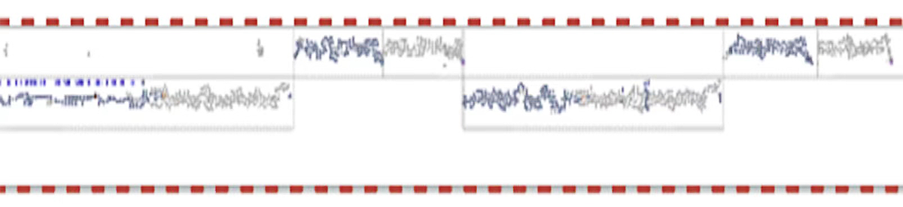
图20：时间线缩略图
右侧提供特殊算子统计功能及结点属性面板。 特殊算子包括三类：含切分策略算子、重排布算子、梯度聚合算子。
各设备算子执行时间线分析
执行总览页面中部为Marey视图。
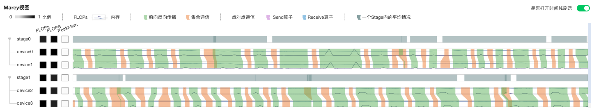
图21：Marey视图
在Marey视图中，每个设备对应三个色块和一条时间线。三个色块展示各stage各设备FLOPs（浮点运算次数，用于衡量模型/算法复杂度），FLOPS（每秒浮点运算次数，用于衡量硬件的性能）与PeakMem（峰值内存）。对于FLOPs和FLOPS，展示当前设备值/各设备最大值，对于PeakMem，展示设备峰值占用内存/设备总内存。
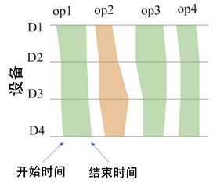
图22：Marey时间线
如图22所示，时间线中，绿色表示计算算子，橙色表示通信算子。同在一个pipeline stage中的设备，在其上执行的算子基本相同，每个设备有一条时间轴，我们在时间轴上标注出算子执行的开始和结束时间，然后连接多边形，填充颜色。该视图可以定位如下两类问题：
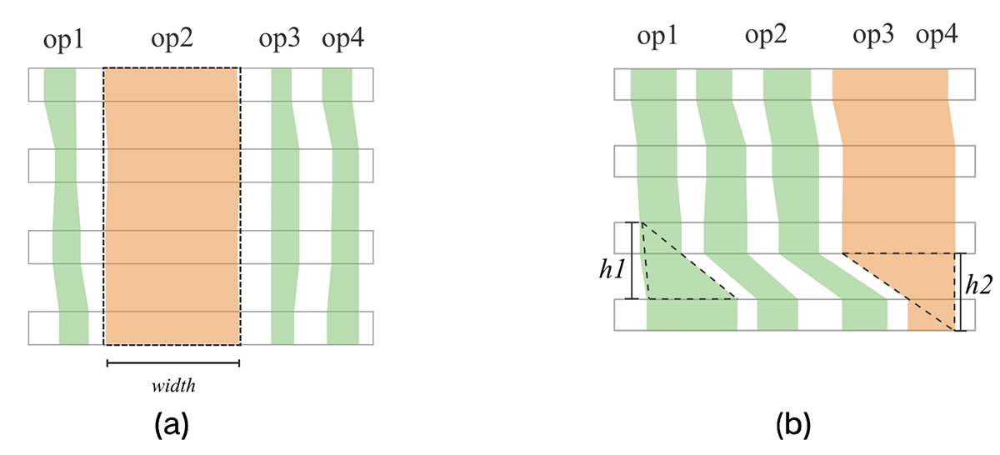
图23：Marey时间线异常
如图23(a)所示，当一个算子在各设备上的执行时间都显著长于其它的算子，可能是该算子融合切分策略不合理。 如图23(b)所示，当一个算子在某个设备上执行时间显著长于其它设备，可能是训练设备出现了慢节点。
时间线支持的交互有刷选放大，双击缩小，鼠标悬浮查看算子执行时间戳信息等。
视图左侧stage设备树可以根据需要进行聚合或展开。stage的时间线上展示的是同一个stage中各设备相同算子实际执行时间的并集。
每条时间线上扩展出折线图，深色线表示FLOPs变化，浅色线表示内存变化。
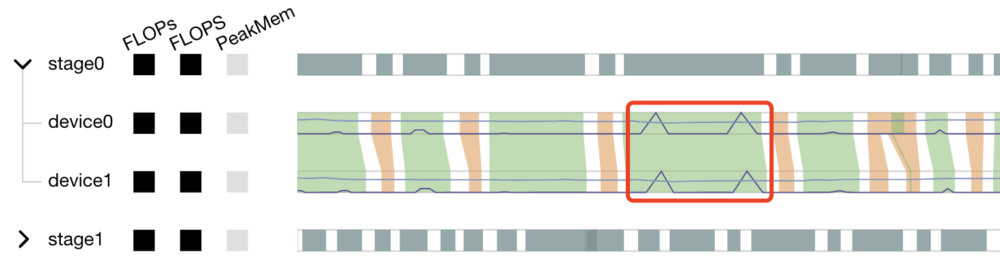
图24：Marey时间线中的折线
如上图所示，内存占用量在红框内有明显峰值，可结合时间线分析设备执行情况。
各设备时间信息概览
执行总览页面底部为时间总览视图。
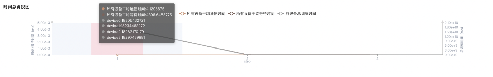
图25：时间总览视图
时间总览视图为双y轴图，左侧展示的训练时间，右侧展示的通信的耗时。本视图展示各个step所有设备的训练时间，每个设备的平均通信时间与等待时间，用户将鼠标悬浮在对应step上，弹出的小卡片中可以看到具体的数值。该视图作为用户的分析入口，若用户判定某个step统计数据存在异常，用户可选中对应step，Marey视图将显示对应step各设备执行时间线，用户可进行进一步分析。
规格
为了控制性能测试时生成数据的大小，大型网络建议性能调试的step数目限制在10以内。
控制step数目可以通过控制训练数据集的大小来实现，如
mindspore.dataset.MindDataset类中的num_samples参数可以控制数据集大小，详情参考：https://www.mindspore.cn/docs/zh-CN/r1.9/api_python/dataset/mindspore.dataset.MindDataset.html
注意事项
PyNative模式下暂不支持性能调试。
训练加推理过程暂不支持性能调试，目前支持单独训练或推理的性能调试。
性能调试暂不支持动态shape场景、多子图场景和控制流场景。